RCS (Robot Control System)
- Interface
- 장비제어
- 라우팅
- 관제
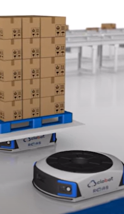
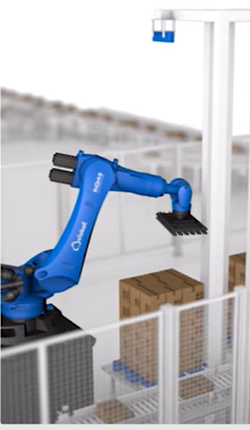
디팔레타이징
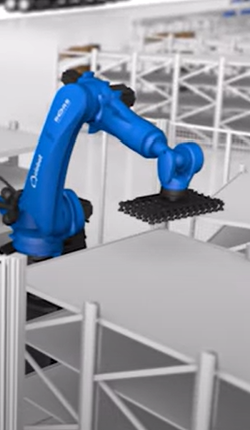
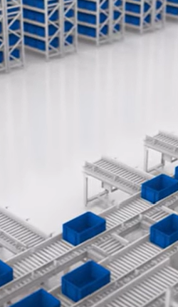
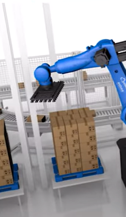
팔레타이징
Robot Logistics Control Knowledge는 물류창고 내 로봇 작업과 자원을 실시간으로 최적화하는 WES(Warehouse Execution System)와 다양한 로봇의 연동·제어·경로 관리를 수행하는 RCS(Robot Control System) 기술을 기반으로 구축된 엠투엠글로벌의 로봇 물류 제어 기술체계입니다.





M2M-RLCK는 다양한 물류 로봇과 자동화 설비를 하나의 플랫폼으로 통합 제어하여 스마트 창고의 운영 효율을 극대화합니다. AS/RS, AMR, 셔틀카 등 이기종 로봇을 유기적으로 연계해 안정적인 물류 운영과 최적의 작업 환경을 제공합니다.
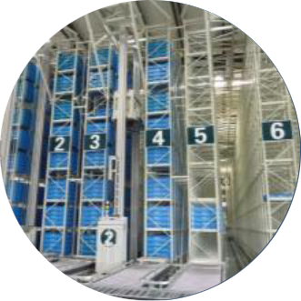
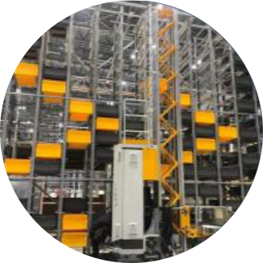
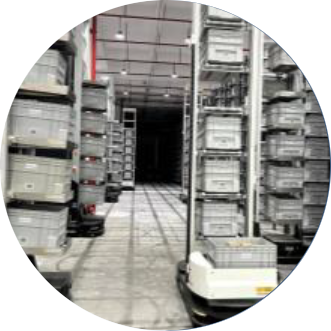
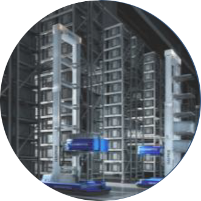
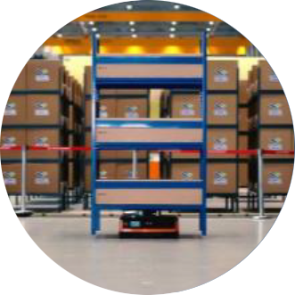
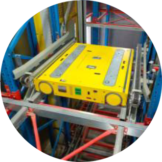
RLCK(Robot Logistics Control Knowledge)는 메시지 스트리밍, 표준 인터페이스, 표준 프레임워크, 표준 UI 라이브러리 등 핵심 플랫폼 기술을 기반으로 구현된 로봇 물류 제어 플랫폼입니다.
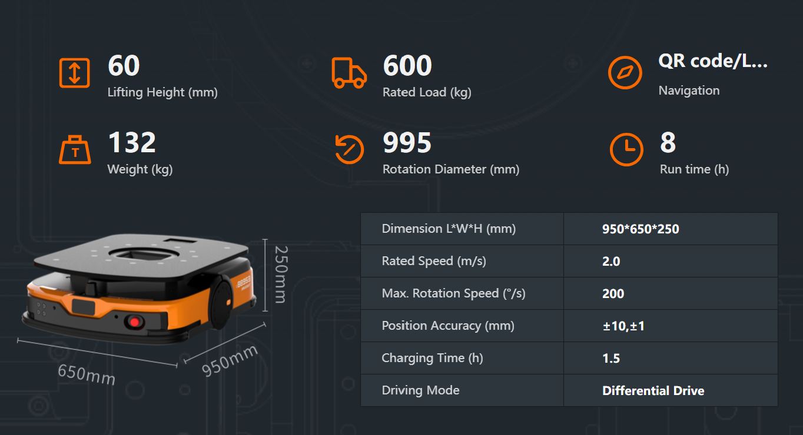
| 이미지 | 규격 | 값 |
|---|---|---|
|
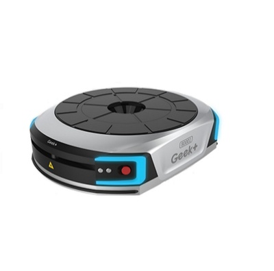 |
ension | L950*W702*H275 mm |
| Self weight | 144 kg | |
| Maximum payload | 600 kg | |
| Maximum lifting height | 60 mm | |
| Minimum lifting time | 4 s | |
| Maximum speed | 2m/s without load 1.5m/s full load | |
| Maximum rotation speed | 90°/1.5s，180°/2s | |
| Maximum slope angle | 2.5° (slope 4.4%) | |
| Stop accuracy | <±10 mm | |
| Navigation | Inertial sensors + QR code | |
| Obstacle detection distance | 2m infrared / 3m laser | |
| Power supply | Lithium-ion, DC50.96V, 28 Ah |
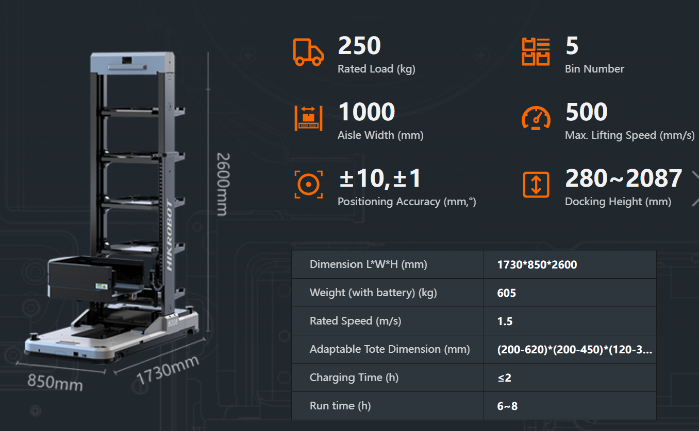
| 이미지 | 규격 | 값 | |
|---|---|---|---|
|
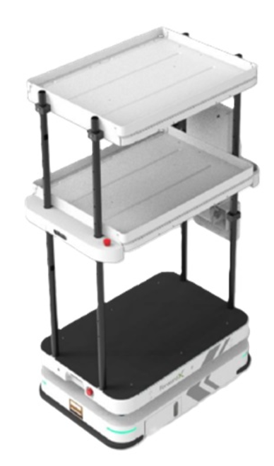 |
Dimensions | Length | 850 mm |
| Width | 480 mm | ||
| Hight | 295 mm | ||
| Turning Diameter | 1,199 mm | ||
| Ground Clearance | 25 mm | ||
| Load Surface | 780 x 500 mm | ||
| Lifting Hight | - | ||
| Safety | Safety Bumper | Yes | |
| Energy Stop Button | 2 | ||
| Movement Obstacle Perception | Yes | ||
| Audible and Visuble Alarm | Yes | ||
플랫폼 통합관제, 통합정보관리, 작업관리, 사용자 시스템을 통합 구현하여 로봇 운영과 물류 업무를 하나의 플랫폼에서 효율적으로 관리할 수 있는 환경을 제공합니다.
Middleware는 WES·WCS와 RCS 간의 안정적인 데이터 연계 및 제어를 지원하며, 태블릿, 스마트워치, PDA 등 다양한 작업자 디바이스와 연동하여 실시간 작업 수행과 운영 가시성을 제공합니다.
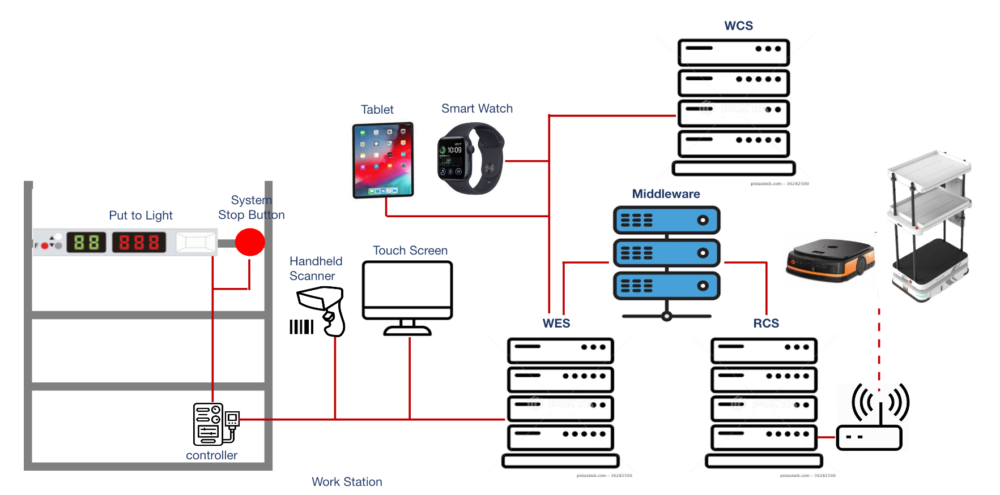
플랫폼을 기능별·구역별로 설계하여, 시스템의 안정성과 확장성을 확보하고 균일한 목표 성능을 유지할 수 있는 시스템의 기본 구조를 설계합니다.

실제 물류센터 환경을 기반으로 한 시뮬레이션을 통해 구축 전 잠재적인 문제를 사전에 검증하고, 시스템 안정성과 운영 리스크를 최소화합니다.
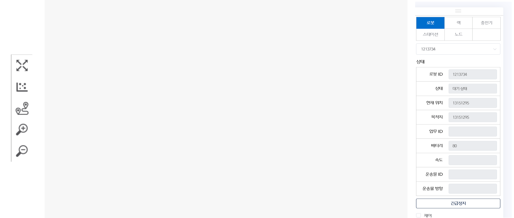
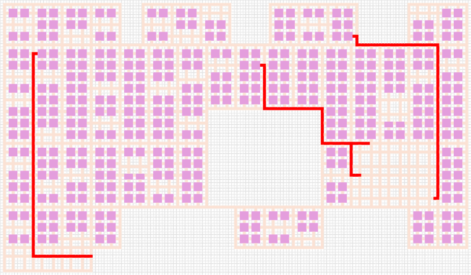
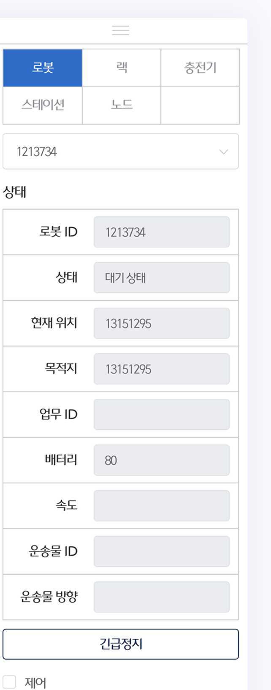
실시간 스케줄링과 최적 경로 계획을 통해 로봇 작업의 효율성과 처리 속도를 향상시킵니다. 영역 제어 기능으로 로봇 간 간섭과 충돌을 방지하여 안정적인 스마트 창고 운영을 지원합니다.
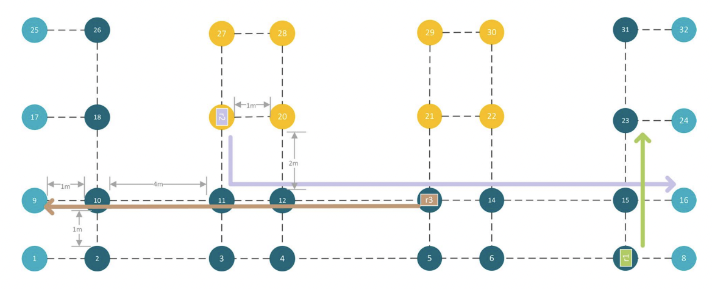
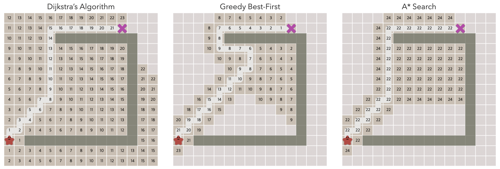
( CJ 대한통운 APRIL )
이기종 무인운반차(AGV)
로봇 통합관제 플랫폼 개발
이기종 자율이동로봇(AMR)
로봇 통합관제 플랫폼 개발
로봇(셔틀 · 소형 AGV), 기타 IT 디바이스를 통해
이커머스
택배에서 활용 가능한
로봇 운영(피킹 · 보관) 플랫폼
개발
AMR 25대 적용
(이천물류센터)
| 제조사 | 모델 | 유형 | 용도 |
|---|---|---|---|
| LG | Cloi | AMR | 피킹 |
| ForwardX | Flex Series | AMR | 피킹 |
| Omron | LD/MD/HD | AMR | 피킹 |
| Geek+ | P500R | AGV | 보충/피킹 |
| Hik | Q7-1000E | AMR | 보충/피킹 |
| Hik | F0-50DCH | AGV | 보충/피킹 |
재고 보충 + 오더 피킹
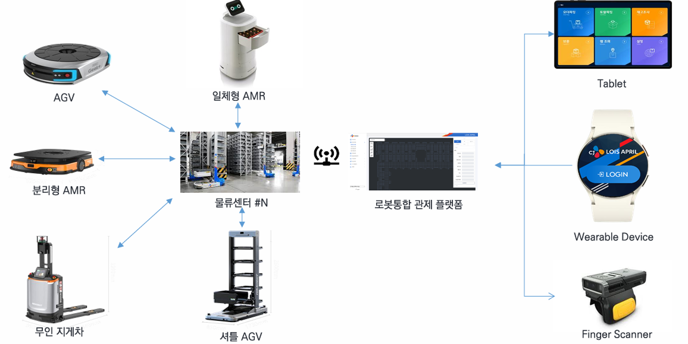
작업자
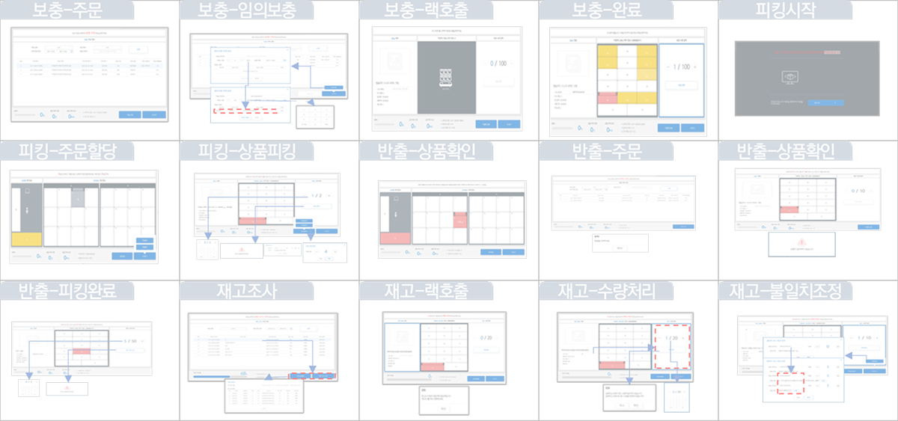
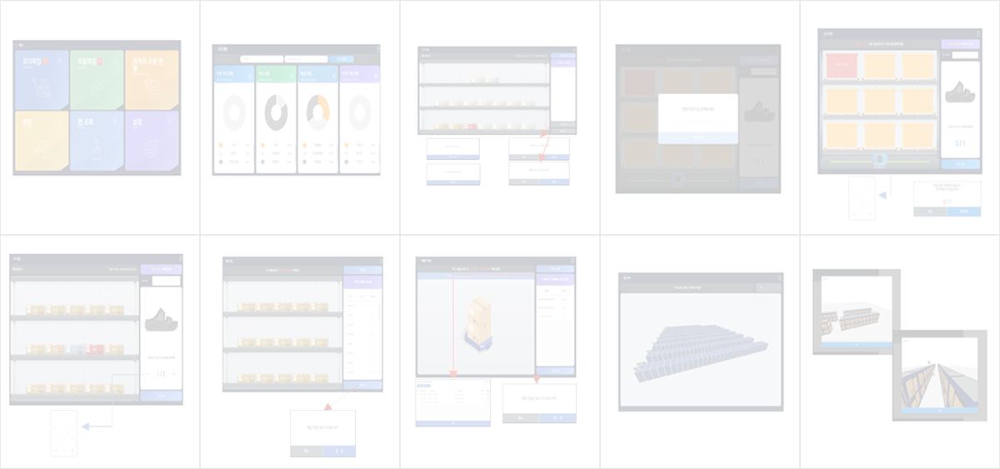